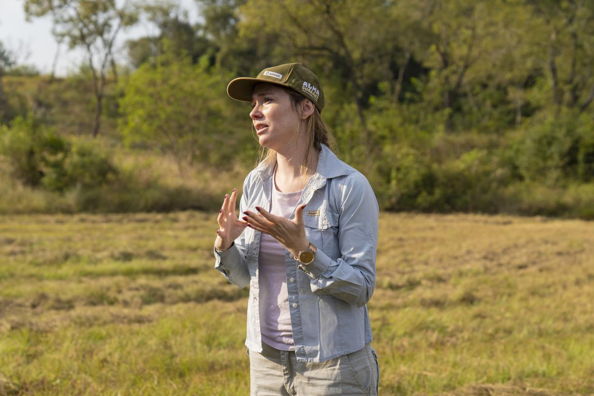
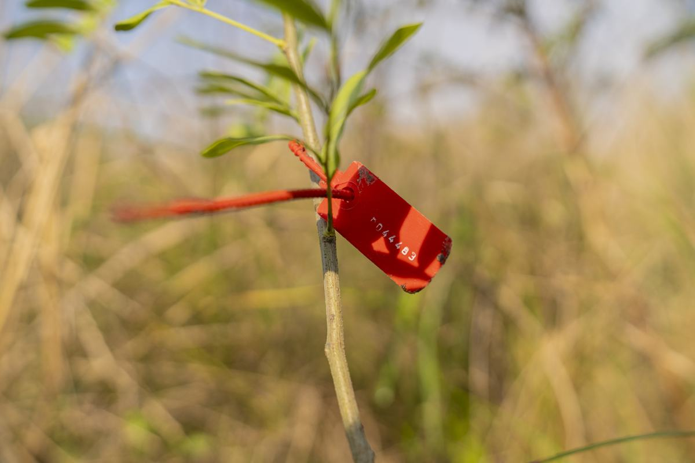
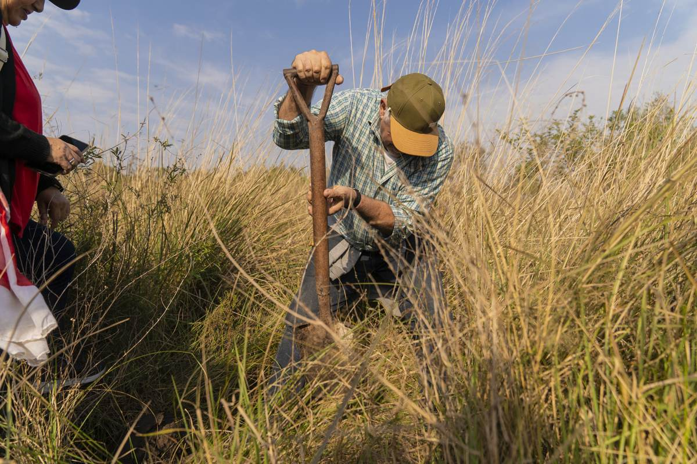

Monitoreo y análisis predictivo para restauración ecológica
DATOS CLAROS,
DECISIONES SEGURAS
Convertimos datos de campo y satelitales dispersos en decisiones medibles y reproducibles para la restauración en Latinoamérica.

Trabajo de campoEl problema
El punto de partida son los datos de base
La mayoría de los proyectos de restauración ecológica no alcanza recuperación completa por falta de datos de base.
Cómo funciona
De los datos dispersos a una decisión clara
Línea de base
Levantamos los datos de base del sitio: condiciones del territorio, historia del lugar y estado inicial.
Predicción
Estimamos la probabilidad de éxito por especie y condición, y la mejor ventana para plantar.
Monitoreo y decisiones
Seguimos cada individuo en el tiempo y convertimos los datos en decisiones medibles y reportables.

Cada planta, un datoModelo de negocio
Tres formas de trabajar con nosotros
Diagnóstico
Servicio puntual de diagnóstico de línea de base para un sitio. El punto de entrada ideal para empezar con evidencia.
Solicitar diagnóstico →Plataforma
Suscripción para clientes con múltiples sitios: todo el monitoreo y los reportes en un solo lugar.
Solicitar demo →Nodo Certificado
Licencia para consultoras ambientales que usan la plataforma con sus propios clientes.
Quiero ser nodo →Validación
No prometemos: mostramos en qué nos basamos
Nuestra metodología se apoya en literatura científica revisada por pares y se valida en campo con datos reales de supervivencia.
Validación en campo: Cerro Otto, Neuquén (datos de supervivencia, con consentimiento).
Base publicada: Montiel et al. 2021, Restoration Ecology.

Medición en campoEl equipo
Un equipo que cree que restaurar es posible
Contacto
Veamos tu sitio de restauración
Te mostramos cómo se ven tus datos de base en una demo privada, sin compromiso.